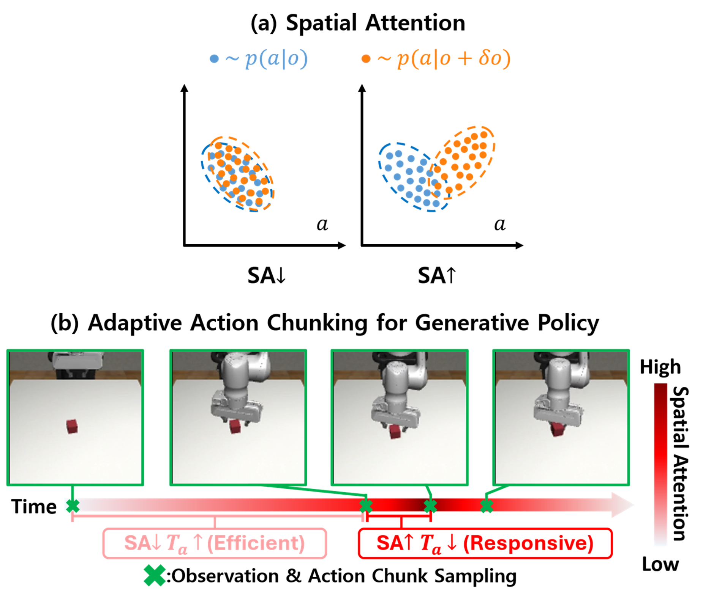
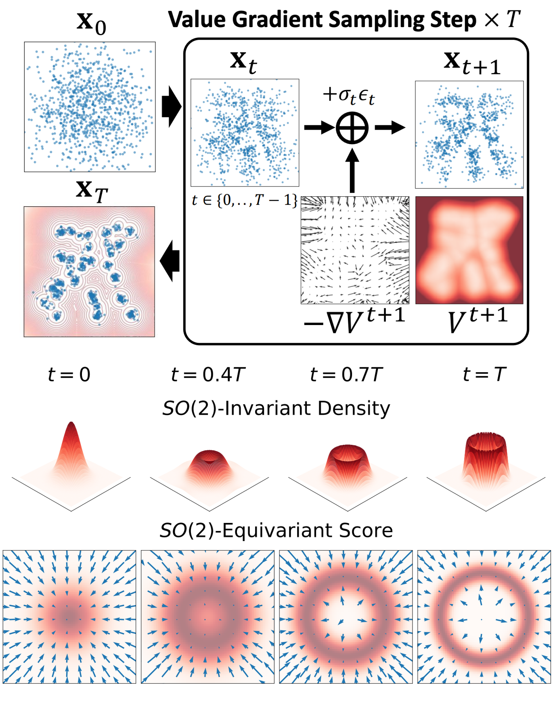
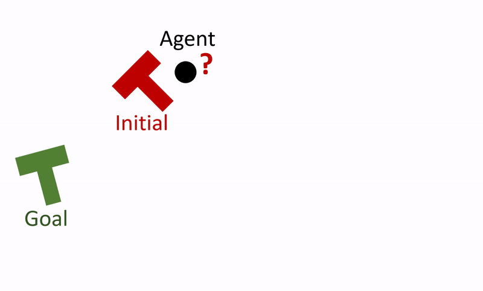

Che-Sang Park
Hi, my name is Che-Sang Park. I'm a Ph.D candidate at Seoul National University, Department of Mechanical Engineering. Currently I am affiliated to Robotics Laboratory, advised by Frank C. Park. My research focuses on Robotic Learning from Demonstrations with Generative Models.
I received my B.S. in Mechanical Engineering, with a double major in Computer Science and Engineering, from Seoul National University in 2020.
If you have any interests about me feel free to contact at cspark@robotics.snu.ac.kr.
C Conference·J Journal·P Preprint·* equal contribution

Spatial Attention: Adapting Execution Horizons for Diffusion Policies via Observation Sensitivity
CompVLA: A Variable Compliance Vision-Language-Action Model for Contact-rich Manipulation

